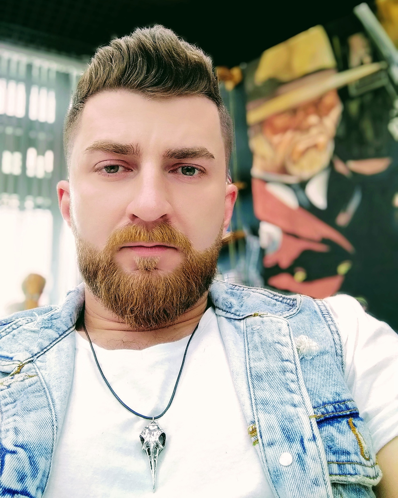

My resume

- Dzmitry, Palyka
- Phone (29)879-15-36, telegram @dip_soul, polykodima@mail.ru
- I am on these courses for the second time. Tuned in seriously. Сhanged jobs to free up time for courses. I understand that intellectual activity and constant movement and comprehension of new things are very important for me. The chance to have your own team in the future, lead it and continue to be directly involved in the process (there is a good managerial experience and working with people). The developer profession fits these requirements perfectly. At the start, the front end attracted more attention, but I do not exclude the possibility of a back end. I want to get rich experience in a company with a well-established system from the start. Epam - is the best fit! And there are a lot of friends, that will ease the process of infusion into the team.
- xxx
- xxxx
- xxxxx
- rolling scopes school - now